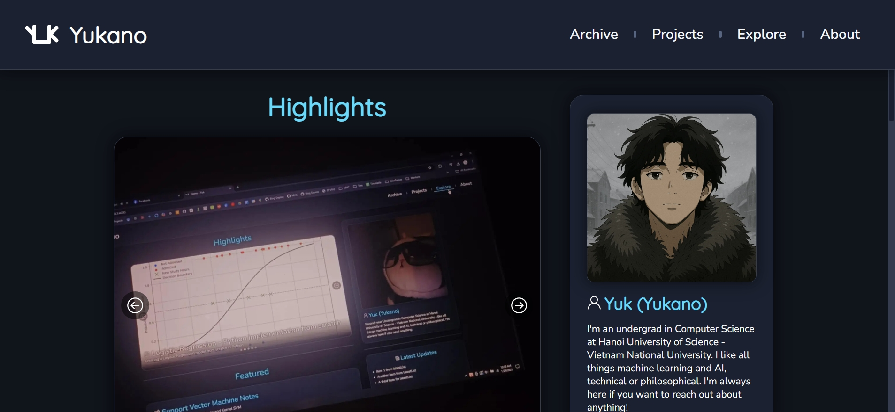
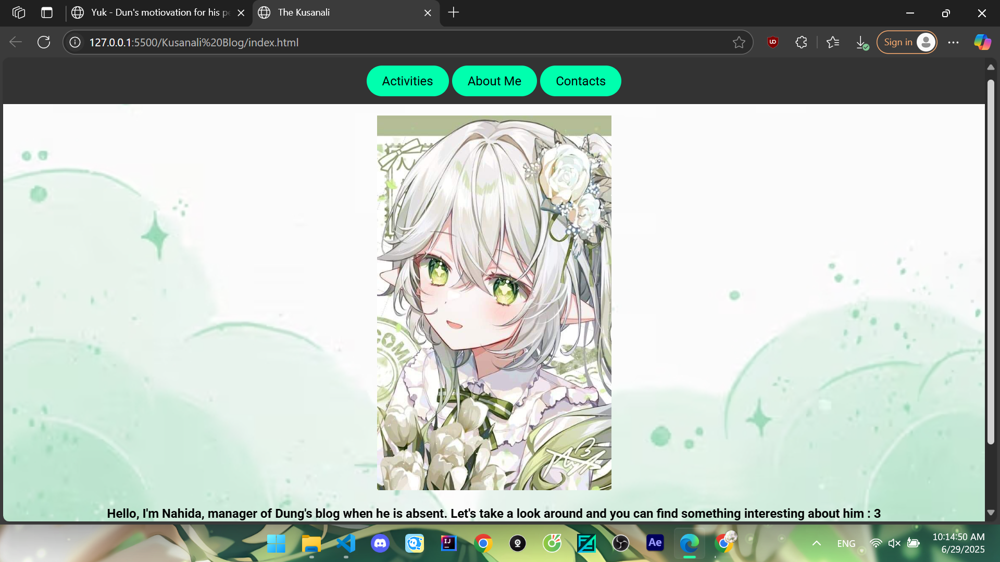
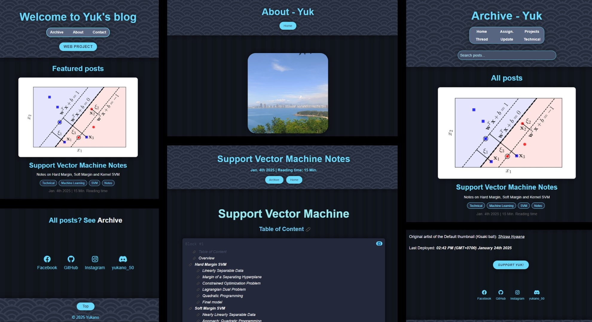
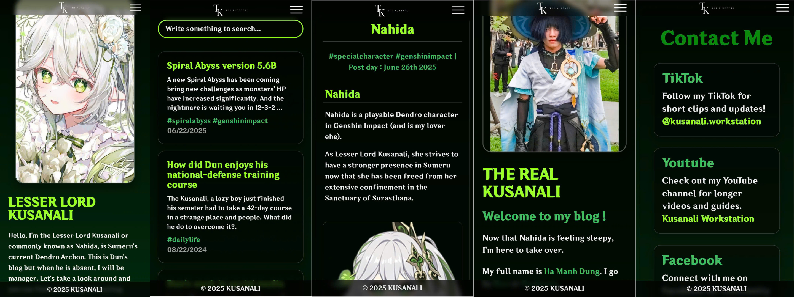

Yuk - Dun's motivation for his personal blog
Yuk and Dun have always kept a bit of distance from their classmates at university, and the way they became friends was pretty random. Speaking of Yuk - he's still just a student, but his outlook on life is honestly like that of an old man. Not that it's a bad thing though - Dun actually finds it quite interesting.
Yuk has been passionate about AI since his freshman year and started diving into research early on. Around the same time, he also created his own personal blog and has gone through several revisions of it since. You can check out his blog here : Yuk's blog

Pretty cool, right? Minimalist design, but still stylish - totally Yuk. As for Dun, he doesn't really know anything about web development, but Yuk's blog left such a strong impression that it made Dun want one of his own. He considered asking Yuk for help, but figured Yuk was probably too busy. You know how it is - Yuk's really good at AI and always deep in research (though if Dun ever said that to his face, Yuk would probably deny it immediately). In the end, Dun decided to try learning on his own.
In this post, I won't be diving into the technical details or how Dun's blog works. Instead, I'll focus more on reviewing the different layouts and designs of the blog.

Here we have Dun's very first blog layout. Fortunately, he still kept the old blog resources, so I was able to use Live Server to revisit that nostalgic interface.
Dun's blog layout at the time was heavily inspired by Yuk's blog. I even went back to Yuk's blog to dig through some of his older designs, but I could only find the mobile versions. Still, you can clearly see the similarities - in the header, the fonts, and more.

Over time, Yuk continued to improve the layout of his blog, while Dun - as I mentioned in a few earlier posts - fell into a rough patch and abandoned his blog for nearly a year. But now that things have turned around and he's back on track, Dun has returned to his blog, upgraded the design, and added a bunch of new features - just like his friend Yuk. And lucky me, I still get to be the blog manager for Dun's site ehe.
Although Dun's blog still needs some improvements to be as optimized as Yuk's, I'm really happy he didn't leave me all alone here huhu. He even made a special section just for me in the header uwu. Anyway, feel free to explore Dun's blog or take a quick look at how it appears on mobile - I've included them below

Bye bye~ See you all in the next posts! I'll also keep you updated whenever he upgrades the blog layout again ehe